{kind=link}
{kind=link}
{kind=link}
{kind=link}
{kind=link}
{kind=link}
{kind=link}
{kind=link}
{kind=link}
{kind=link}
{kind=link}
{kind=link}
{kind=link}
{kind=link}
{kind=link}
{kind=link}
{kind=link}
{kind=link}
{kind=link}
{kind=link}
{kind=link}
{kind=link}
{kind=link}
{kind=link}
 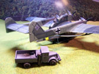
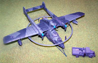
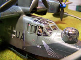
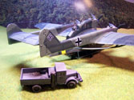
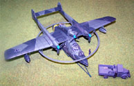
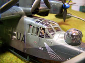
{kind=link}
{kind=link}
{kind=link}
You may click on these images to view larger pictures
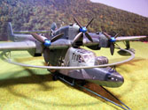 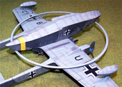 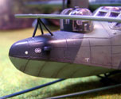
Super Model 1/72 Scale Blohm und Voss BV 138C Seedrache
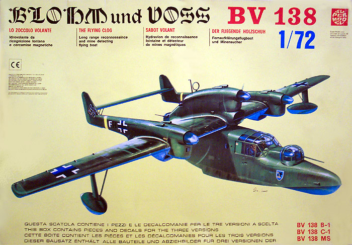
Supermodel Kit # 10017
Original MSRP $26.10 USD
Currently, Collector�s Market Value
Revell Kit #4368
MSRP $35.35
Images and text Copyright � 2004/2005 by Matt Swan
Developmental History
The Blohm und Voss BV 138 was officially named 'Seedrache' (Sea Dragon) but with the unusual configuration of a three engined flying boat with a short hull, high mounted wings and two tail unit beams it quickly became known as �The Flying Clog�. The BV 138 was first flown in 1937 and was used by the Luftwaffe all over Europe, the Baltic Sea and Scandinavia - often flying for hours far out over the sea in search of allied convoys. This long-range maritime reconnaissance flying boat was utilized until the end of the war not only for anti-shipping but also for personnel transports whereby ten fully equipped infantry troops could be carried which actually required no modification of the plane. The Luftwaffe's famous special-operations unit, KG 200, used one for this purpose. Fully loaded it could fly over 4000 kilometers and stay up for 16 hours. This range could be increased even further when using RATO packs (Rocket Assisted Take-offs) or when launched from catapults on board seaplane tenders.
Originally known as Ha 138, Hamburger Flugzeugbau being the aircraft subsidiary of the Blohm und Voss shipyards, the prototype was first developed in 1935 but displayed marked lateral stability deficiencies, structural deficiencies and poor hydrodynamics during trials, which resulted in extensive redesign of the aircraft. The BV 138A-1 was the first production version entering service in April 1940. Only 25 were built and these were immediately used in the occupation of Norway. This experience brought to light the necessity to further strengthen the aircraft's structure. The BV 138B-1 had a reinforced hull and floats, improved engines and armament. This version entered service in Dec 1940 with 24 being built. The BV 138C-1 featured additional structural strengthening, a four-bladed airscrew on the central engine, a 13-mm MG 131 replaced the 7.9-mm MG 15 machine gun, and an optional 7.9-mm MG 15 could be added. It entered service in March 1941 and 227 were built. This final production version of the �Clog� was powered by three Junkers Jumo 205D-1 diesel engines and although they were fuel-efficient they made the aircraft very slow and gave it a maximum ceiling of only 5000 meters (16400 ft). However, armed with 20mm cannons in two turrets and a 13mm heavy machinegun in an open position as well as an optional MG15 the BV 138 could often take care of itself when attacked. It has for example been known to shoot down a British Blenheim as well as a Catalina flying boat in air-to-air combat. And since the BV 138 could also take a lot of battle damage and keep flying, especially as the diesel fuel rarely ignited when hit by machine gun fire, she was generally well liked by her crews.
Although the BV 138 was able to carry small loads of bombs and depth-charges and thereby do attack missions such as sub-hunting, most operations were pure reconnaissance and surveillance, often working together with the German U-boats. But they were also used for convoy escort, air-sea rescue or equipment transport. The BV 138 MS was a minesweeper variant, converted from BV 138B-0 pre-production aircraft and a few C-1s. All armament was removed and a degaussing loop of duralumin and field-generating equipment were installed. About 70 BV 138 C-1s were equipped with catapult points for operation from seaplane tenders and about 20 BV 138C-1s were equipped with a modified fuel filter to remove possible pollutants when refueling from u-boats. Some C-1s were also equipped with the FuG 200 Hohentwiel or FuG 213 Liechtenstein S radar to easier search out enemy ships and attack submarines.
Of the 227 BV 138C-1s built, 164 were equipped with two racks for bombs and thereby doubling the offensive payload of the earlier built aircrafts. These later versions were designated BV 138C-1/U1 although they were mostly still just called BV 138C-1. Also some BV 138B-1s are believed to have been modified into U1 versions. The BV 138 flying boats were used almost all over Europe and patrolled the North Sea, Skagerrack and Kattegatt, Baltic Sea, Arctic Ocean, Norwegian Sea, Bay of Biscay as well as the Black Sea and the Mediterranean.
The Kit
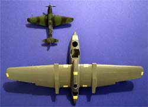
This Italian manufactured kit has been out of production for several years now and is a fairly rare item to find, even in places such as e-bay. While Super Model still exists as a producer of plastic kits they do not seemed inclined to reissue this kit. A friend in Rome, for the amazing price of about $16.00 US, purchased this particular kit for me. This kit includes parts to make any one of three different versions of this aircraft; the early B model, the more predominant C-1 version or the Mine Sweeper version with its large degaussing ring. The kits dimensions are exact when compared with those published and it produces a surprisingly large model when completed. In the picture to the right that is a 1/72 Yak-9 sitting next to the 'Clog', you can click on that picture for a larger image.
The box contains three very large sprues of grey plastic with raised panel lines and engraved control surfaces. The kit contains 144 injection parts including 15 clear parts for hatches, turrets and windows. There is no flash at all and all parts are easily removable from the sprues. Looking over these parts I can�t help but think of a Revell or Monogram 1970�s kit, the quality level of the plastic is very good and the castings are top notch. All the molds appear to have proper alignment; there are no sinkholes apparent on any of the parts. I did not notice any injection pin marks on any of the exterior surfaces. The front and rear turret clear parts will definitely test the modelers ability to work with clear seams as both turrets are two piece assemblies, split right down the middle. All the clear parts demonstrate good clarity and nicely defined panel lines. The individual windows for the fuselage seem like they may fall into the �fiddly little pieces� category. The side windows for the cockpit give you the option to pose them open or closed.
There are four crew figures included with separate arms. These are some of the finest quality 1/72 scale crew figures that I have ever seen with a production kit, they have good, clean facial details and uniform details and look like they will paint up to be very striking. I checked all the primary kit pieces for general fit and could find no problems there. In the size comparison picture you can see that there is very little gap on any of the large pieces while taped together. The pieces lined up nicely and all the panel lines formed continuous lines across the joints. Notice also that the ailerons, rudders and elevator are separate pieces.
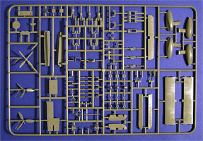
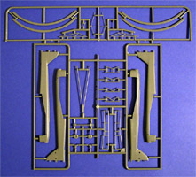
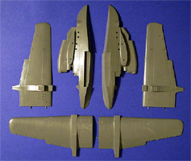
You can click on any of these images to view a larger picture.
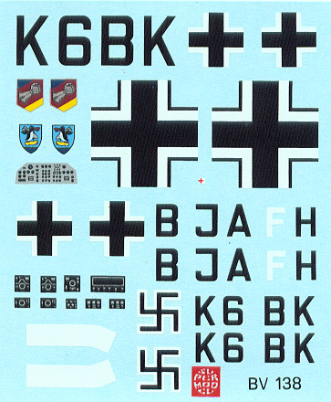
Decals and Instructions
The instructions are a very large fold-out sheet that contain a numbered view of all parts which comes in handy, as there are no numbers on the sprue. There is also a very nice little historical background section on the aircraft in four languages and unlike many pieces of written material coming from the European community, the English is very well done. There are nine well-detailed exploded views to help the modeler assemble the model. All painting instructions and decal placement instructions are located on the back of the box and are in color. The color chart provided does not give any paint codes but simply names colors.
While the decals appear to have good registry and color density they provide us with no stencils whatsoever. There are markings for three different aircraft and there are complete swastikas, which may be an illustration of just how old this kit really is. Included in the decals are fascia markings for all the instrument panels in the cockpit.
Conclusions
This is a superb kit. If the panel lines were engraved rather than raised it would be very competitive in today�s market. The quality of the plastic and molds are very good and the subject matter is unusual to say the least. I would like to have seen more in the line of stencils and service marking on the decal sheet. There is only one other BV 138 kit out there that I am aware of and that is the very pricey 1/48 HML resin model from the Czech Republic. There are no aftermarket goodies available for this kit so any additional details (like inside the sparsely outfitted cockpit) will need to be scratch built. Overall this is a very nice and very unusual addition to any 1/72 scale seaplane collection.
3/2/05
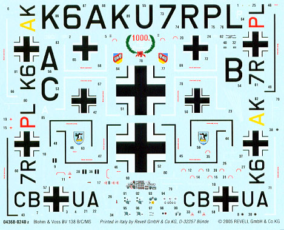
Under the Super Model name tag this kit is very difficult to get hold of but in late 2004 Revell of Germany acquired these molds from Super Model and will re-issue the kit in October 2005 under their own logo. The box art may change but the kit is the same. Keep in mind as these molds age we may start to see some quality issues with the parts. I do not know what, if any restoration work Revell has in mind for the molds. As far as a collectible the Super Model box will hold more value simply due to rarity but for building the Revell kit will soon be readily available.
12/24/05
Last week the Revell Germany re-pop of this kit arrived at Swanny�s Models. As predicted the molds are exactly the same however the decals have been upgraded as seen to the left. The instruction package has been improved as well with one exception. The new kit directions would have you place the floor pan for the radio operator on to the equipment shelf when it should actually be located low in the hull. The plastic itself is a slight improvement also. The Supermodel plastic was softer than the Revell plastic and slightly harder to work with. Overall given a choice between the two boxings of this kit I would choose the Revell package. Rumors are also circulating that all the old Supermodel molds, including this one, are being reissued by Italeri and are already on store shelves in Europe. Looks like we all have a good opportunity to pick up that Cant Z kit once again.
10/2/05
This has been sitting in the stash for quite some time softly calling my name so I figured it was time to haul it out, that and somebody decided to pay me to build it. :o)
I�m approaching this kit a little differently than most of my builds, I�m kind of sneaking up on it and building the beaching dolly first. Beaching dollies always seem to give me a hard time on these seaplane kits so I figured it would be to my advantage to get this piece out of the way right up front. Most of the time here was spent removing the pesky mold separation lines that ran across both sides of all the pieces. Once assembled I airbrushed it with a dark Olive acrylic, painted the wheels with my custom tire gray and did a little weathering by dry brushing silver across wear areas, washing the model with a sludge wash then adding some ground pastel chalks. I put the chalks on while the wash was still wet which caused it to clump in a few areas much like mud � exactly what I was hoping for. I�m afraid the picture came out a little on the dark side and looks almost black, oh well.
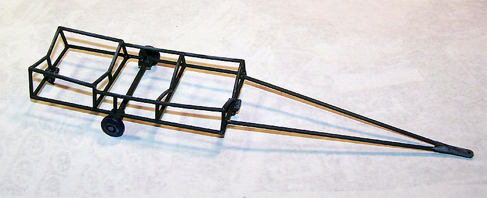
One advantage to having the beaching dolly complete is that I now have somewhere to set the fuselage assembly between building sessions. I sat and studied this model for nearly a week before I started actual construction and finally decided that the raised panel lines just had to go. I was guessing that the actual aircraft most likely had overlapping panels and raised detail but what the kit has is too far out of scale to remain. Shortly after I made this decision I received the Squadron Signal Bv-138 booklet and from a close review of the pictures there it was readily apparent that the �Clog� had a very smooth finish with recessed lines.
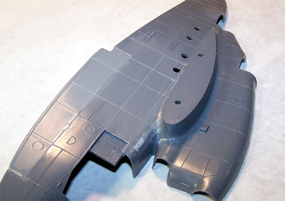
Before beginning the scribing process I glued the two hull inserts into the main hull and saw that some filler putty was going to be needed along this seam. As for the scribing process I start with a #2 Xacto knife with a large leaf blade and scrape off a raised panel line. Once the surface has been smoothed I lay a piece of Dymo tape along the site of the line and scribe it with a scribing tool. Basically I am using the same techniques described in my previous feature A Systematic Approach to Scribing. Once an areas has been scribed it is wet sanded with fine sand paper to remove and remaining raised pieces then the new panel lines are cleaned out by lightly running the scribing tool down them one last time. While this is going on I am also beginning work on the cockpit and adding some detail based on period pictures.
10/15/05
Plastic shavings are everywhere. I�ve been working on this off-and-on for a few days now and have managed to get the right side of the hull completely scribed. Three of the crew figures are painted and installed. I added some flap levers to the center consol but after checking the view with the canopy in place realized that most if not all of any additional work done in here will never be seen. Enough of that! The cockpit floor was installed to the right side fuselage where the instructions indicate you should glue it to the left side fuselage. I reversed this so I could get a good fit on the radio operator�s floor pan and am glad I did. The radio operator�s floor pan needed almost 1/16 of an inch removed from one side and had to be raised about the same amount from where the kit says to place it in order for the operator to be sitting in anything like a normal position. The fuselage pieces were test fit several times while doing this and the view into the interior was checked from the aft gun positions. Depending on how much of the view is blocked by the gunners I may add some detail back here � we�ll see.
I have been doing all of my scribe work with a steel scribe. Just the other day I received from Great Models the Bare Metal Foil �Expert�s Choice� scribing tool. Now I�m not a very gullible person and when I see advertisement stating that something is the best since whatever came last I tend to take it with a grain of salt. BMF has done quite a bit of advertising showing how this tool supposedly removes a fine line of plastic and does not raise the edges along the new engraved line. This raised edge thing is certainly something that happens with the steel scribe so I figured �what the heck, for ten bucks I�ll take a chance.� You know what � this scribing tool does everything they said it does, it�s really quite amazing! With all that said I am now going to return to scribing the left side hull and if you have any scribing work to do I strongly suggest you get one of these Bare Metal Foil scribing tools � they kick ass.
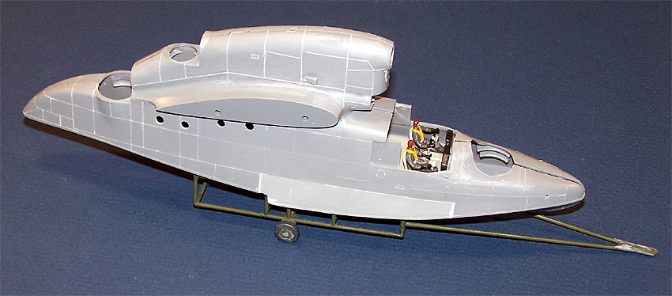
This section scribed with a steel scribing tool.
10/22/05
I took a little time and read the instructions that came with the BMF scribing tool. They suggest sanding off the existing panel lines then scribing or trying to use the existing lines as reference and sanding off the remained after scribing. Normally I scrape off the old panel line with a razor then rescribe. I decided to try simply scribing over the existing line and had great results. I�m still using Dymo tape for the compound curves and a thin stainless steel six inch ruler for the flat areas.
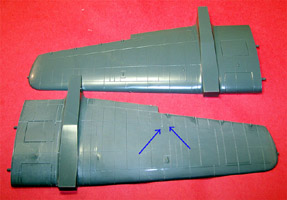
After scribing the second hull half I shifted over to the wings and floats. By using the existing panel lines on the floats and a 10 power Omni Visor I was able to freehand scribe the four pieces associated with the floats. I was really surprised that I was able to do this because I really do not have a terribly steady hand.
So the floats are scribed, assembled and set aside. The wings are all done using the steel ruler. For each panel line I am making three light passes then moving to the next line. Once the entire panel has been scribed I wet sand the entire piece to remove and remaining raised lines. Next the panel is scrubbed with an old toothbrush with hand soap under running water to clean the debris out of the panel lines. The image at right can be clicked on to view a larger picture. Take note of the two blue arrows. I screwed up twice on this panel and scribed my line long. To remedy the problem some Mr. Surfacer 500 was dabbed into the bad line with a toothpick, allowed to dry and sanded off in the wet sand stage. Also in that picture you see in the foreground a scribed wing panel and the original kit panel in the background with the raised lines still in place.
After scribing one wing I got tired of this and shifted over to the two 20mm cannon gun turrets. The gun piece had the barrel drilled out then was painted with Gunze Burnt Iron. The turret were dipped in Future, allowed to dry then assembled with Testors Clear Parts Cement. Now we come to the fun part � masking these little buggers. As I do with most of my clear parts I masked these with thin strips of 3M masking tape. I spent about an hour on each turret masking them off.
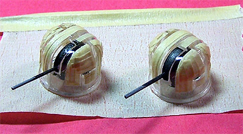
I briefly considered trying to pack some damp tissue around the gun port prior to painting but gave up on that idea. I figured it would be a lot easier to just come back later with a fine brush and retouch this area. Both turrets are stuck to a strip of tape and sent to the paint room where they are first airbrushed with RLM 02 then with RLM 81. The masks are removed, the interior of the turret is wiped out with a cotton swab soaked in Windex to remove and overspray coming through the gun port and they are test fit to the fuselage. Now you may be wondering just what the heck I�m doing painting and removing the masks this early in the game. The masked areas of the turrets project into the fuselage and the fit is so tight that they cannot be installed with masking tape in place. After the hull is assembled and before painting the turret will be remasked. The test fit goes well and the hull is assembled with both cannon turrets and the observer�s turret ring being trapped between the two main pieces. The seam along the hull is filled with Mr. Surfacer 500.
Now I�m back to the final wing scribing. I�m getting really tired of this stuff now. I think I have something like 8 to 10 hours involved in just scribing this model so far and there are still lots of pieces to do. One thing I failed to mention about the scribing, I am not scribing any lines that cross over seams. I leave all these on the hull and wings for after assembly to ensure that they will line up properly. The wings are finished then assembled. The floats are glued in place and some detail pieces are added to the lower wings. I�m almost ready to attach the wings to the hull and as I look at this I can see there is quite a bit of filler in this model already.
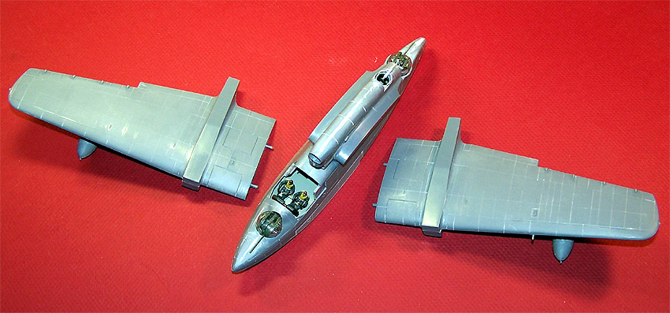
11/5/05
It�s time to attach the wings and right away we have a slight problem � the left and right wings are misaligned if you just plug them in and go. I used a round needle file and opened up the mounting holes on both sides making them slightly oblong so one wing could be moved back slightly and the other could be moved forward. A healthy amount of Tenax 7R was applied and they were held in place until the glue set up. Both seams needed some Squadron White putty troweled in then smoothed out with acetone based fingernail polish remover. While all this was setting up I scribed the boom pieces and assembled them. The tail plane was also scribed and put together.
As I start cleaning up the seams on the booms I noticed that there are raised lines that seem to demark an air intake at the front of each boom but they appear only on the right hand sides. Another modeler I talk to is building this same kit and pointed this out to me at about the same time. We wondered if this intake was meant to be off center or if there was a problem with the kit. Out comes the Squadron Signal book and I started looking over all pictures that showed the fronts of the engines. I found several interesting things at this point. It seems that the original prototype aircraft had a large intake centered in the cowling face but this disappeared with some of the A version aircraft suddenly to reappear on all the B version and C version aircraft. It also was very obvious that there was a support rod that bisected the intake from top to bottom. With this information in hand I went back to the modeling table.
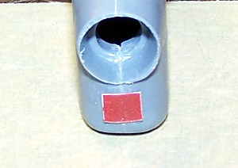
In order to ensure that I was making all three intakes the exact same size and shape I first cut a piece of Dymo tape to the correct dimensions. The raised details were shaved off the front of the cowlings and the tape was applied. I traced the tape with my BMF scribing tool, removed the tape and moved to the next engine. All three engines were done like this. Now I placed a medium burr bit into my Dremel and opened the center of each traced outline. Once I was completely through the body of the cowling I changed over to a square needle file and continued to open the intake until I reached the traced line. All three intakes are now open. Next I selected a thin sheet of Evergreen stock polystyrene and cut a strip just wide enough to slip into the intake opening. From the strip three sections were cut off and placed aside. I cut a very thin strip of sheet and glued it across the center of each square to form the bisecting brace.
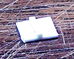
I placed a dab of poster board adhesive onto a toothpick and picked up one of my new intakes and test fit it to the opening, some slight adjustment was made with a flat needle file and then she slid right into place. A drop of Tenax 7R was used to secure the intake and the toothpick was removed. With a dental pick I adjusted the position of the new intake while the glue was still soft. The second and third intakes were placed in the same manner.
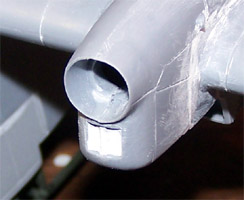
Next the aft carburetor inlets were assembled, two for each engine, and glued in place. The left boom was installed then the tail plane was glued in place. Now the right boom goes in and the alignment is checked from the front and rear of the plane to make sure the structure is not twisted. Guess what? It is twisted but the glue has not completely set up yet and I can strong-arm the booms into the correct alignment. This does leave a fairly large gap on one boom where it meets the wing � more putty. While this is drying I scribe the ailerons and glue them in place with some slight up deflection to one and down to the other. I�ve also cleaned up the aileron actuators and glued them in place under the wings. The elevator has been scribed and glued in place with some slight down deflection. Tell you what; I am so glad that I put together that beaching dolly first thing because it has come in so handy as a resting place for this model during construction. And another thing I�m glad to have is a good supply of Squadron White putty and Mr. Surfacer 500 because this baby is eating up a lot of both. I spent nearly an entire two hour session cramming white putty into those boom seams and smoothing it out with the acetone fingernail polish remover. Wait until my daughter wants to change her fingernail polish and finds all her polish remover is gone, kind of puts the shoe on the other foot from last time she used all of my supply for her fingernails (heh heh).
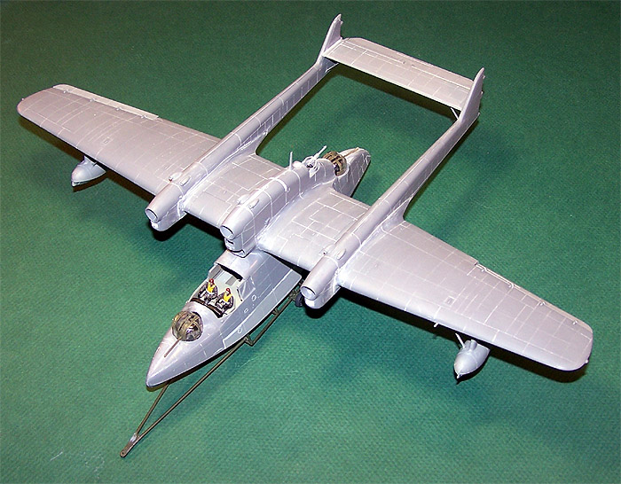
Okay, so some time passes and I am back with sanding sticks and sand paper wet sanding all these putty filled seams. When I talk about wet sanding I have a small cup of water at hand and simply dip the corner of my sand paper or tip of my sanding stick into it and sand. Some people like to have a huge pan of water to work with but I find this is just not necessary. I do need to keep a roll of toilet tissue at hand to occasionally wipe off the area I�m working on.
The four support struts for the tail plane were cleaned up and glued in place. When I was scribing the tail plane I noticed four round spots that looked like they could be service ports of some sort with raised edges. I diligently scribed these but now I find they are the locator points for the support struts so if you are scribing this kit do not waste your time scribing these four round spots on the tail plane and make sure they are facing down when the tail plane is installed.
After all that sanding was done I had to go back over several of the panel lines with the scribing tool (lightly) and clean out the debris and occasional piece of putty that had become lodged there.
11/25/05
The last pieces to be scribed are the rudders then they are glued in place with some slight left deflection. Working with a short thin strip of Dymo tape I trace each panel line that crosses a glue seam to not only clear them but to ensure they track correctly across the joint. From here the main canopy is masked and glued in place. When trying to fit the canopy I found that the outside edges of the instrument panel interfered slightly and had to be trimmed. Also on my copy of the model the left side panel right behind the pilot had some heat warpage and had to be filed flat before the canopy fit properly. Once the canopy was in place and the glue (Testors Clear Parts Cement) had fully dried I came back and masked the turrets off again. Some tissue was stuffed into the upper observers� station and the model is ready to head to the paint room.
First the entire model gets a coat of Mr. Surfacer 100 cut nearly 50% with lacquer thinner. Once this had dried and rough areas were hit with light sand paper and I was ready for pre-shading. The last model with a Luftwaffe splinter scheme I did was done with a sienna colored preshade and most of that seemed to disappear under the paint. I don�t like to use black for this as I feel it is too stark so I mixed a very dark gray enamel and shot all the panel lines with it. Now I�m ready for some color; using Gunze-Sangyo RLM 65 thinned with isopropyl alcohol and some Liquitex flow aid I adjusted my air pressure down to 8 psi and started working the under surfaces. If you are new to preshading this is what I did � I fill in the center of each panel with color to get a good color density working with the airbrush very close to the model surface. Once a good sized area has been done I move back about six inches and lightly mist the area to fade the dark lines. In the center image below you can see the preshaded only area, a partially filled area and a completed section on the outboard wing panel.
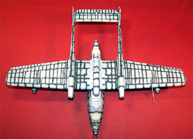
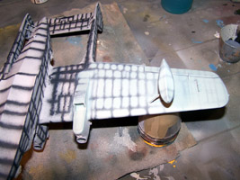
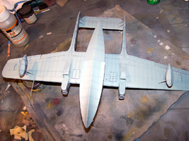
You may click on the small images above to view larger pictures
11/27/05
It certainly has been a busy holiday weekend (Thanksgiving here in the States) with a lot of progress being realized on the Clog. Once the RLM 65 had dried for a day I masked off the floats and the lower surface of the hull completely. I also masked the entire undersurface of the wing and elevator. The backside of the kit box was removed and taken to the paint room for reference. Now I painted the areas the would be RLM 71 Dark Green then lightened some of the base paint and went back giving the central area of each dark green panel a light overspray to help accent the panel lines. The photo shows this effect stronger that it actually appears and by time all weathering is applied it will fade a bit more. This was a single day of modeling for this stage.
Now that the dark green has dried for a day I mask off the splinter scheme, again, using the box for reference, and head for the paint room with a bottle of RLM 70 Black/Green in hand. By the way, this masking stage consumed three hours of time followed by twenty minutes of painting. Just like the Dark Green, some of the RLM 70 was lightened (with RLM 71) and each panel center got a light overspray. The splinted scheme masks are the removed leaving the lower masks in place. This scheme is not done yet, we have at least one more overlay before the lower masks can be removed but that is for the next day of modeling.
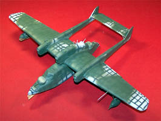
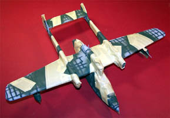
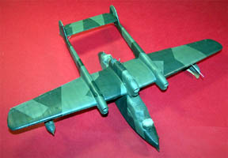
You may click on the small images above to view larger pictures
12/21/05
This next layer of masking and painting ended up taking a bit more than a day. I wanted a fine feathered edge for the winter camo and to achieve this I laid out a pattern on the model using Blue Tac (that�s basically poster adhesive) then covered the outside areas with masking tape. I started with the forward hull area and rather than use a plain flat white I selected a very light aircraft gray thinned out about 30% with lacquer thinner. I was careful to keep my airbrush at a ninety degree angle of attack verses the masking material to maintain the feathered edge. I worked across the model section by section until the pattern was complete.
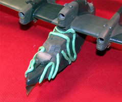
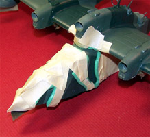
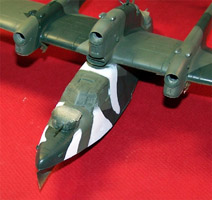
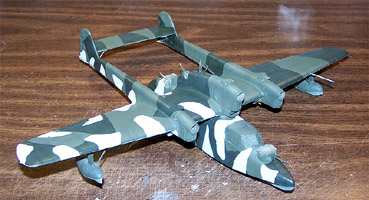
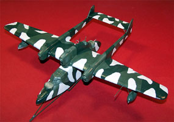
You may click on the small images above to view larger pictures
Once I had finished the pattern two things came to my attention that I had overlooked; first was that the light gray was slightly to concentrate and I should have let some of the green pattern show through (oh well) and second was that I had failed to make allowances for the decals. What I mean is that this pattern would have been applied in the field and the workers would have avoided painting over the markings.
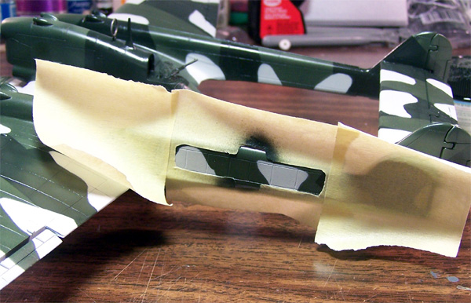
To remedy this problem I cut my decals out from the sheet then placed them on top of a wide piece of masking tape and traced them. This was then cut out from the tape and the new mask was laid onto the aircraft � back to the paint room to recreate the original camouflage pattern in these areas.
Once this had been accomplished and the paint had dried I sealed the entire model with Future floor polish thinned about 25% with Isopropyl Alcohol. This was allowed to dry overnight and I was able to place the decals. I found the Supermodel decals to be somewhat difficult; they did not seem to be effected by my setting solution (Micro-Sol) and did not want to conform to the model well. I had to treat them several times with the setting solution and physically press them down with my finger. Even then when they dried they showed a desire to silver. I went back and treated them one last time with a heavy application of Future and finally solved the problem. While I was doing all this, the new release of this kit from Revell showed up and I had a chance to look it over. The first thing I saw was that the new decals are a vast improvement over the original kit decals and are more comprehensive. I�ll come back to this new release of the kit later on with more details.
Moving right along I have cleaned up the three small bombs and the propellers. These are all mounted on toothpicks with small dabs of super glue and head to the paint room for a coat of RLM-70 Black/Green. These will not be put in place until all weathering is done and that little project is next.
12/24/05
Using my basic sludge wash I treat all the recessed panel lines then wipe the excess off with a slightly damp paper towel. I added some heavy chalk marks around the exhaust ports then wiped them gently with a cloth to fade them in a bit. I created a water line by brushing on a very heavy coat of my sludge wash then wiping it in a downward pattern along the length of the hull. The model was allowed a few hours to dry then was coated with Polly Scale clear flat to seal everything.
The clear flat only needed about fifteen minutes to dry and the masks were removed from the canopies. I did get some paint creeping under the masks in a few places and this was removed by cutting off a toothpick at a sharp angle, dipping the end in some Goo-Gone and scrubbing the offending paint marks off. The Future coating was repaired with some Future on a fine paint brush and the repair was complete. Next the propellers were assembled and installed. The aft gunner was painted and glued in place with a spot of superglue. The antenna was made from invisible thread drawn across a black marker and attached with fine spots of superglue.
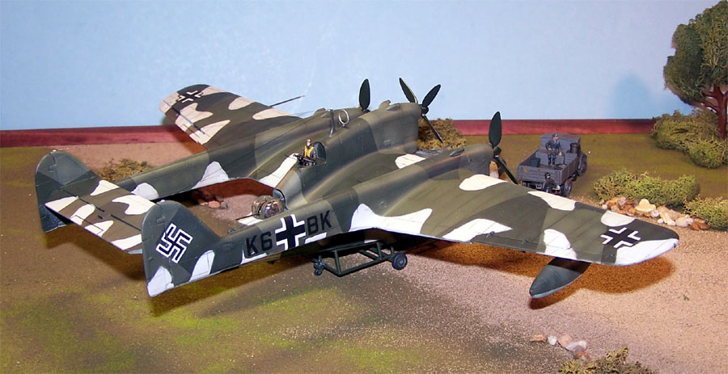
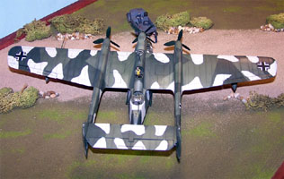
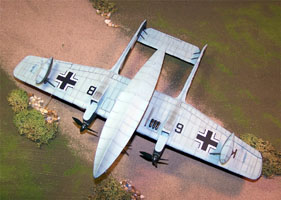
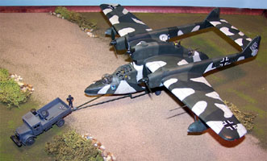
You may click on these small images to view larger pictures
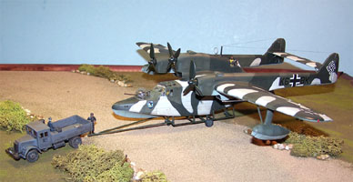
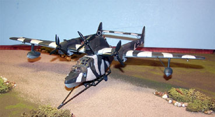
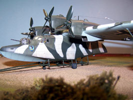
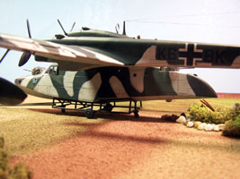
And just to get a good idea of the aircraft's size, look how she compares to a Bf-109.
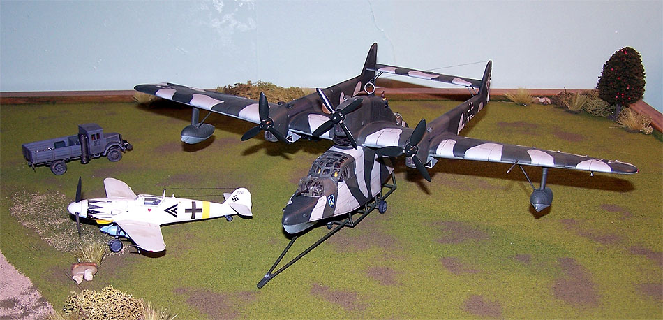
Bv-138 MS 'Mine Sweeper'
10/23/08
I really like this aircraft so it did not take much to push me into building another one in the mine sweeper configuration. I think I can draw a similarity between this build and child birth in that I think mothers forget the pain which leads them into yet another pregnancy. I had forgotten the pain of scribing this massive aircraft and the effort (grunt) of filling all those monstrous seams around the tail booms and wing joints. Not to mention the massive masking process (epidermal please) to get a good looking model. I do have to confess this did not take nine months as the kit was began in May of 2008 and just finished near the end of October 2008 � only seven months, yippee! Anyway, this time I built from the Revell of Germany boxing of the kit which is popped from the exact same molds as the Super Model kit however the clear plastic is marginally better than the earlier release, the instructions are much better organized than before and the decals are a massive leap forward from the old Super Model decals. I did have a little trouble with silvering and had to switch to using Future floor polish to get them to settle down nicely. Micro-Set and Micro-Sol did not touch them even with repeated applications which I found kind of strange for RoG decals.
Construction and painting went pretty much exactly like the first kit with the exception on not putting a winter distemper on the kit. The biggest difference was the addition of the degaussing ring which required the removal of the aft gun turret and the removal of the forward 20mm cannon. Not having to mask and paint a second gun turret was a minor blessing because that process really sucks. I painted the aircraft without the degaussing ring and painted the ring separately then installed the ring with superglue. It must have been one hell of a ring sweeping mines in this thing; a big, heavy aircraft right down on the deck tearing along �balls to the wall� hoping none of those mines will detonate early. So here it is, the Bv-138 MS from Swanny�s Models.
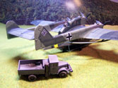
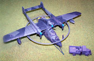
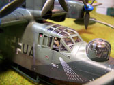
You may click on these images to view larger pictures
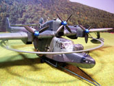
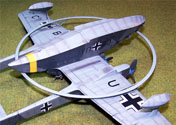
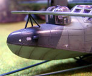


{kind=link}
{kind=link}
{kind=link}